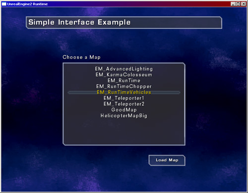
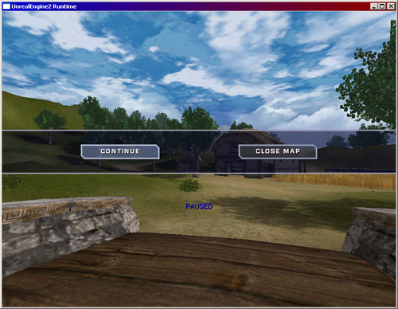

UDN
Search public documentation:
RuntimeExampleRestrictedMenu
Interested in the Unreal Engine?
Visit the Unreal Technology site.
Looking for jobs and company info?
Check out the Epic games site.
Questions about support via UDN?
Contact the UDN Staff
Runtime Example Restricted Menu
Created by Chris Linder (DemiurgeStudios?) on 10-21-03 for the Unreal Runtime. Last Updated by Chris Linder (DemiurgeStudios?).Related Documents
GuiReference, LocalizationReferenceIntroduction
This example will go over how to create an example menu that limits access to the engine and engine settings. A menu such as this would be appropriate for computers placed in a museum or educational setting for example. As well as creating a simple menu, this example goes over how to restrict the console so that commands can not be typed in. This example is based on the Unreal Runtime but it can be used in any 2226 or higher build of the engine.Creating the Main Menu

The main menu was designed to be very simple. It does not have any tabs, any game settings, any controller settings, or even a button to exit the game. The game can be exited by closing the window. (If the game is fullscreen, press "alt-enter" to make the game not fullscreen, and then you can close it.) The menu has a title, a map list with a heading, and a load button. The up and down arrows can be used to select the map. To load the map either the load button can be click, enter can be pressed, or the map name can be double clicked. The last map loaded is saved and is highlighted when the main menu is shown again. This includes between map loads and exiting the game and re-launching it. See the well documented code for implementation details.Creating the In-Game Menu

The mid-game menu was also designed to be very simple. It pauses the game and gives you the choice to either continue the game, or close the map and return to the main menu. You can continue the game and close the mid-game menu by either clicking the "CONTINUE" button, selecting the "CONTINUE" button with the keyboard and pressing 'Enter', or hitting 'Esc'. You can close the map and return to the main menu by either clicking the button or moving the selection to that button and pressing 'Enter'. See the well documented code for implementation details.Creating the Restricted Console
RestrictedConsole is very simple; it extends Engine.Console override KeyEvent so that the key press to bring up the console is ignored. It also overrides Type, Talk, and TeamTalk so that none of these callGotoState('Typing').
The engine needs a console, which must be a subclass of Console, to work. If there is no console specified in UE2Runtime.ini, in the [Engine.Engine] section, the game with not launch. If the console specified is not a subclass of Console, the engine with launch but maps will not load.
Installing the Example
Download the attached zip file and unzip it in your Runtime directory. Next you will need to alter your INI file settings to use the new menus and console. In UE2Runtime.ini, in the[Engine.Engine] section, change the console to:
Console=ExampleMenuRestricted.RestrictedConsoleNext, in the
[Engine.GameEngine] section, change the menu classes to:
InitialMenuClass=ExampleMenuRestricted.RestrictedMainMenu MainMenuClass=ExampleMenuRestricted.RestrictedMainMenuNow in User.ini, in the
[Engine.PlayerController] section change the mid game menu to:
MidGameMenuClass=ExampleMenuRestricted.RestrictedMidGameMenuAt this point you can launch the Runtime and you will see the new menus. If you want to make changes to these menus, make sure you add "ExampleMenuRestricted" to the EditPackages lists in UE2Runtime.ini.